Лабораторна робота №7
Тема: Програми для відновлення файлів
Завдання:
1.Відновити дані на будь-якому накопичувачі за допомогою 3 різних програм.
2.Описати переваги та недоліки використаних програм.
Хід роботи
1.Recuva
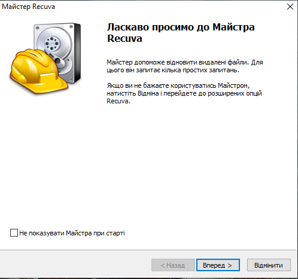
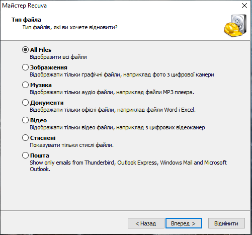
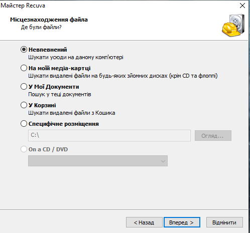
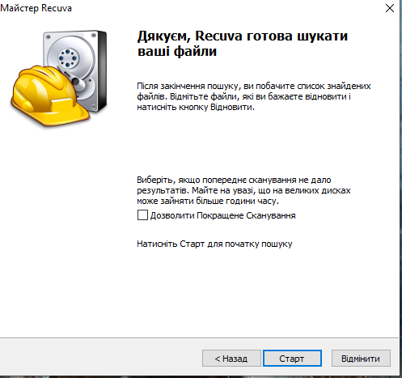
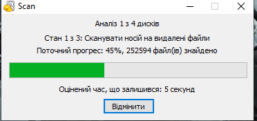
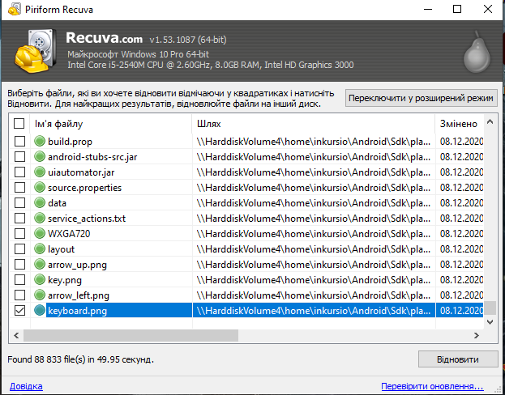
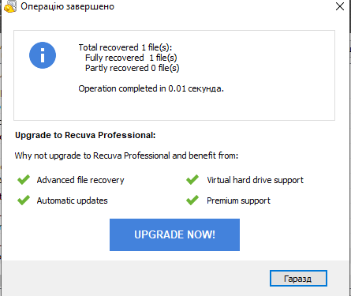
2.Glary Undelete
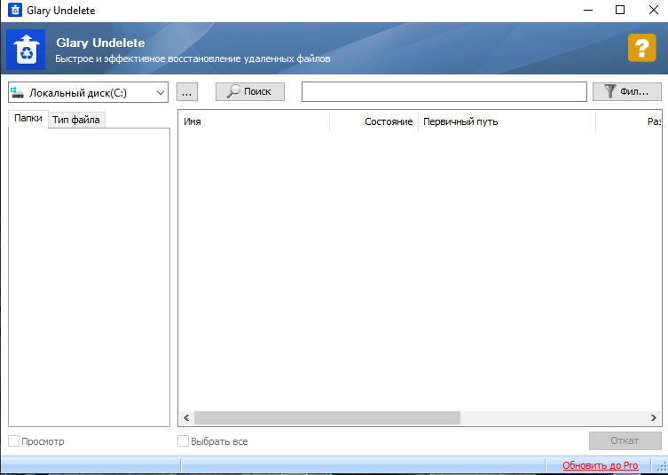
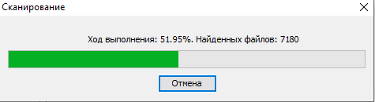
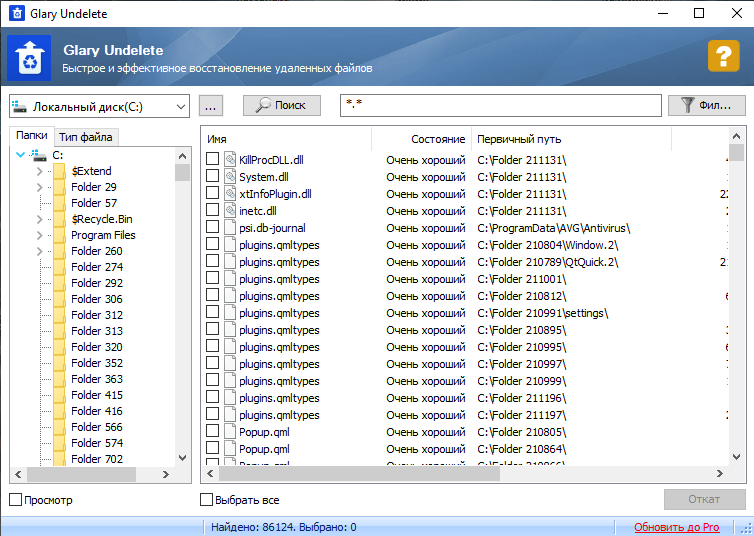
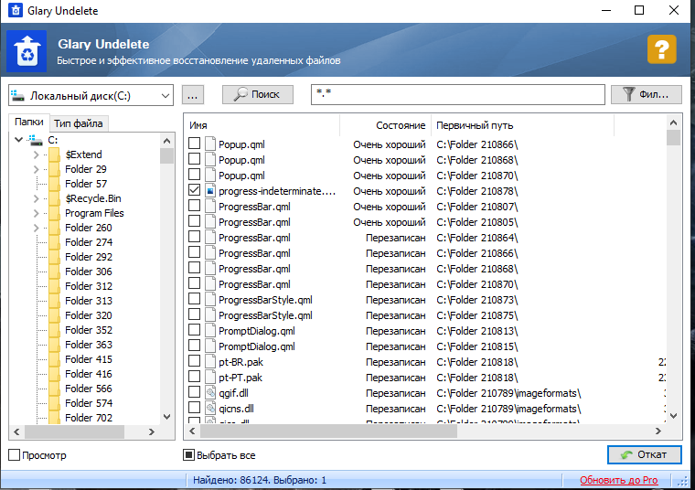
3.Puran File Recovery
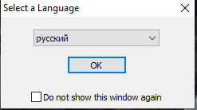
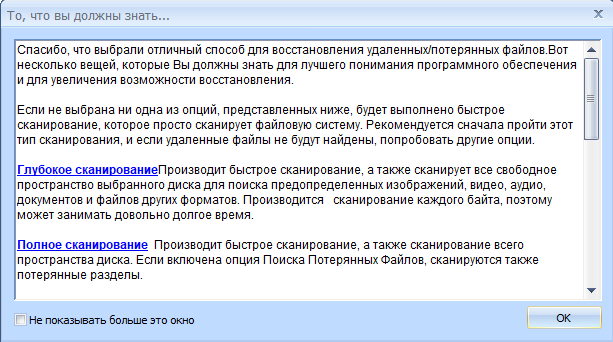
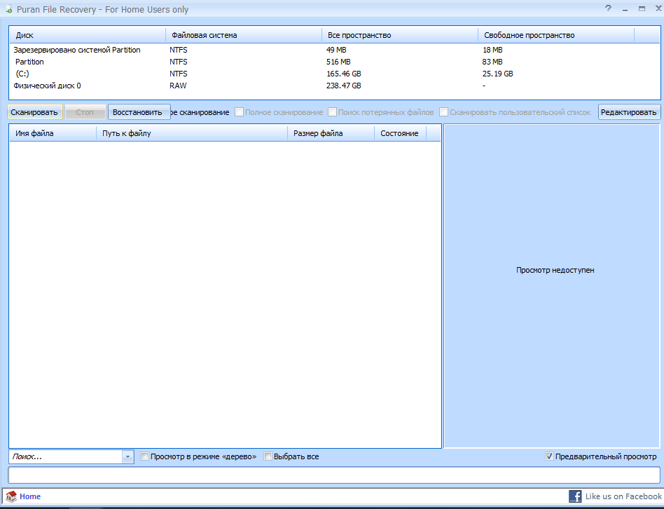
Висновки
Я не описував як робити выдновлення бо все показано на скріншотах. В всіх програмах питає куди зберегти файл який відновлюється
Найбільше сподобалась Glary Undelete. Несподобалась Puran File Recovery